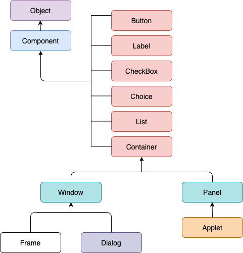
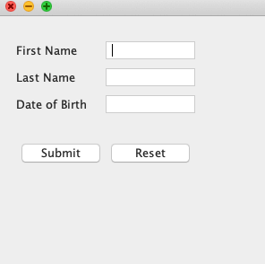

AWT Components in Java
28 Mar 2025 | 3 min read
AWT stands for Abstract Window Toolkit. It provides various GUI component classes like Label, Buttons, Text Boxes, Labels, and Menus, etc., to show window components on the screen. All these classes are part of the Java.awt package. It is heavy-weight.
AWT is platform-dependent because it relies on the underlying operating system (OS) and native GUI components. It implies that an AWT-based program can be seen differently on Linux, macOS or Windows.
AWT Hierarchy
The following image represents the hierarchy for Java AWT.
AWT Components
| S.N. | Component | Description |
|---|---|---|
| 1 | Button | It is a simple push button that triggers an action when clicked. |
| 2 | Canvas | It is a blank rectangular area where custom graphics can be drawn. |
| 3 | Checkbox | It is a component that allows the user to select or deselect an option. |
| 4 | Choice | It is a drop-down list that allows the user to select a single item from a predefined set of options. |
| 5 | Label | It is a component that displays static text. |
| 6 | List | It is a component that displays a scrollable list of items, allowing the user to select one or more items. |
| 7 | Scrollbar | It is a component that allows the user to scroll through a large amount of content that exceeds the visible area. |
| 8 | TextArea | It is a multi-line text input area where the user can enter and edit text. |
| 9 | TextField | It is a single-line text input area where the user can enter and edit text. |
| 10 | Frame | It is a top-level window with a title bar and border, used as the main container for other AWT components. |
| 11 | Panel | It is a container that can hold other components, but does not have a title bar or border. |
| 12 | Dialog | It is a pop-up window used to display information or get input from the user. |
| 13 | Menu | It is a list of commands that can be accessed from a menu bar. |
| 14 | MenuBar | It is a bar at the top of a frame that contains menus. |
| 15 | MenuItem | It is an individual command within a menu. |
AWT Java Program
1. //Java Program to create AWT application in Java
import java.awt.*;
public class AwtApp extends Frame {
AwtApp(){
//Creating AWT Components
Label firstName = new Label("First Name");
firstName.setBounds(20, 50, 80, 20);
Label lastName = new Label("Last Name");
lastName.setBounds(20, 80, 80, 20);
Label dob = new Label("Date of Birth");
dob.setBounds(20, 110, 80, 20);
TextField firstNameTF = new TextField();
firstNameTF.setBounds(120, 50, 100, 20);
TextField lastNameTF = new TextField();
lastNameTF.setBounds(120, 80, 100, 20);
TextField dobTF = new TextField();
dobTF.setBounds(120, 110, 100, 20);
Button sbmt = new Button("Submit");
sbmt.setBounds(20, 160, 100, 30);
Button reset = new Button("Reset");
reset.setBounds(120, 160, 100, 30);
//Adding components on Frame
add(firstName);
add(lastName);
add(dob);
add(firstNameTF);
add(lastNameTF);
add(dobTF);
add(sbmt);
add(reset);
//Set size, layout and visibility of the frame
setSize(300, 300);
setLayout(null);
setVisible(true);
}
//Creating main method to create the object of the class
public static void main(String[] args) {
AwtApp awt = new AwtApp();
}
}
Output:
